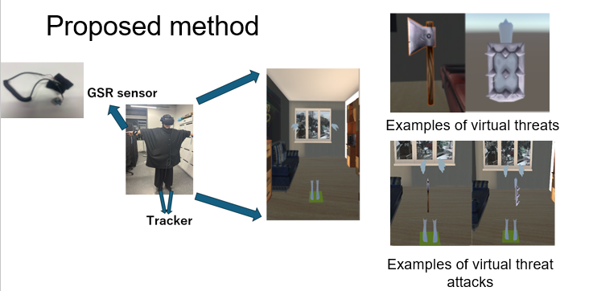

研究内容

本研究では、VR空間におけるユーザの心理状態と身体所有感の関係に着目し、 生理信号を用いた客観的評価手法の検討を行っています。
視覚と運動の同期（visuo-motor synchrony）によって身体所有感を誘発し、 仮想環境内で提示される脅威刺激に対する反応を、皮膚電気反応（GSR）を用いて計測・分析しています。 これにより、従来主観評価に依存していた身体所有感を、 より客観的に評価することを目的としています。
将来的には、VRトレーニングや医療・リハビリテーション分野への応用を目指しています。